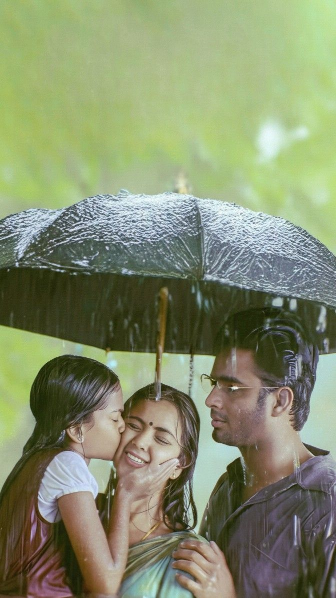
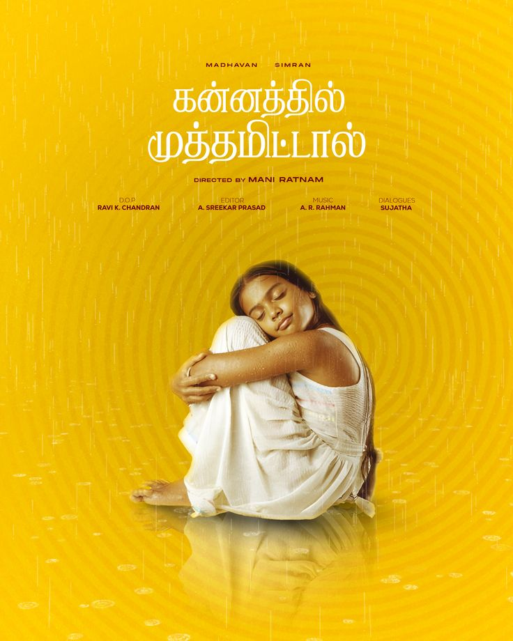

Kannathil Muthamittal is a deep emotional Tamil film directed by Mani Ratnam. It tells the story of a young girl who discovers she is adopted and goes on a journey to find her biological mother in a war-torn region. AR Rahman’s music gives the film its emotional strength. The movie is widely praised for its storytelling and performances.
| Attribute | Details |
|---|---|
| Release Year | 2002 |
| Language | Tamil |
| Director | Mani Ratnam |
| Music | A. R. Rahman |

